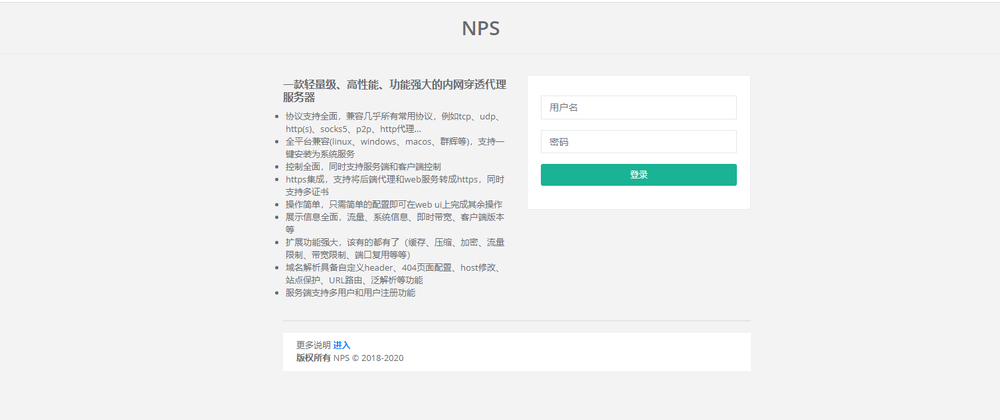
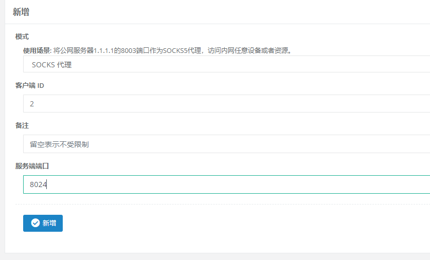

内网穿透
前言
以前的笔记本闲置着感觉很可惜，所以将它装了个ubuntu18 Server，准备拿来当服务器。这里就来搞搞内网穿透，目的是在公网也能访问我的笔记本服务器
内网穿透简介
内网穿透，也即 NAT 穿透，进行 NAT 穿透是为了使具有某一个特定源 IP 地址和源端口号的数据包不被 NAT 设备屏蔽而正确路由到内网主机。下面就相互通信的主机在网络中与 NAT 设备的相对位置介绍内网穿透方法 ---from 百度百科
nps简介
这里我用到的工具是nps , nps是一款轻量级、高性能、功能强大的内网穿透代理服务器。目前支持tcp、udp流量转发，可支持任何tcp、udp上层协议（访问内网网站、本地支付接口调试、ssh访问、远程桌面，内网dns解析等等……），此外还支持内网http代理、内网socks5代理、p2p等，并带有功能强大的web管理端。
项目地址: nps
文档地址:nps文档
nps使用例子：nps example
主要看使用例子就可以了，基本功能全都覆盖到了
nps安装
快速安装
在公网的vps上安装nps server, 在内网的笔记本上装上nps client
将下载的压缩包解压到vps和内网笔记本上
服务端
以root权限运行
./nps install
客户端
以root权限运行
./npc install
自行编译
现在本地环境中配置好go编译环境
获取源码：
go get -u ehang.io/nps
进入go源码目录下
服务端: go build cmd/nps/nps.go
客户端: go build cmd/npc/npc.go
nps启动
服务端
以root权限运行
./nps start
记得8080端口不要被占用了 ，访问http://IP:8080/就可以看到管理页面，用默认密码admin/123登录进去。默认密码在/etc/nps/conf路径下的nps.conf文件中修改

然后在管理界面添加一个客户端，其中的唯一验证密钥是客户端连接需要用到的
设置客户端的socket代理端口

客户端
无配置文件连接模式
连接vps命令如下：
./npc -server=ip:port -vkey=web界面显示密钥
这个样运行是没有注册到系统服务的，要注册到系统服务上才能开机自启，守护进程
- 注册：
sudo ./npc install 其他参数（例如-server=xx -vkey=xx或者-config=xxx） - 启动：
sudo npc start - 停止：
sudo npc stop - 如果需要更换命令内容需要先卸载
./npc uninstall，再重新注册
nps使用
tcp隧道
目的：建立tcp隧道，用于远程ssh连接
- 在管理页面中的TCP隧道选项，新增一条tcp隧道，填写监听的端口（1024）、客户端id和目标端口（22），保存。
- 访问vps ip上的端口1024，相当于访问内网ip端口22